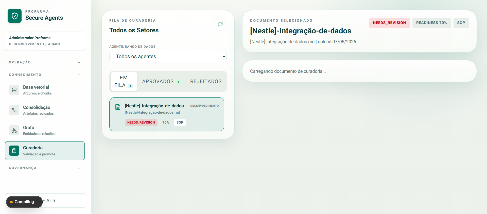
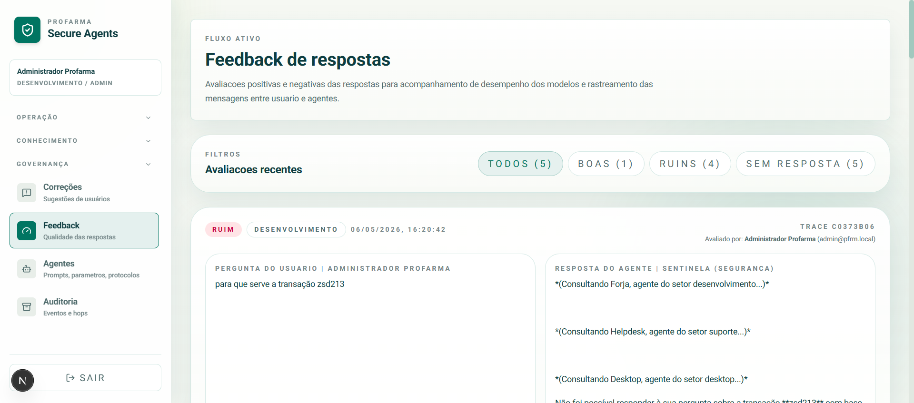

A peça que faltava
para a era dos agentes.
Em 9 slides, você vai entender por que toda companhia hoje tem IA — mas quase nenhuma tem agentes em produção — e qual é o único conceito que destrava essa virada.
Por que toda iniciativa de IA corporativa
estagna no piloto?
Nenhuma dessas é a resposta. Vire o slide.
foram abandonados após PoC.
É porque o modelo não sabe
o que a sua empresa sabe.
A IA generalista alucina sobre o seu negócio porque foi treinada sobre o mundo — não sobre a sua operação, seus SOPs, seus riscos, sua governança.
Três gerações de IA corporativa.
Toda companhia atravessa esta trilha. Quase nenhuma chega ao fim.
Era do Chatbot
Responde. Não age. Não cita fonte. Não tem memória corporativa.
Era do Copilot
Ajuda o humano. Mas o humano continua sendo o gargalo.
Era do Agente
Decide. Executa. Responde por seus atos.
Mas só funciona com conhecimento curado, agentes setoriais e governança auditável.
O conceito cabe em três pilares.
Tire qualquer um e o agente desmorona. Junte os três e a era da automação destrava.
Conhecimento curado
Não é dado. É SOP versionado, com curador setorial, aprovação rastreada e zero alucinação.
Agentes especialistas
Forja, Sentinela, Suporte. Cada um com escopo, prompt, permissões e ações próprias. Conversam entre si — como um time real.
Governança auditável
Cada resposta tem fonte. Cada ação tem justificativa. Cada disparo tem trilha.
Não é mais um chatbot.
É o sistema nervoso
da automação por agentes.
Isto não é slideware.
O produto já está operacional. Cada captura abaixo é uma tela viva, hoje, dentro da PFRM.


O que muda na terça-feira de manhã.
- O analista perde 40min procurando o SOP correto.
- O ChatGPT público inventa um processo que não existe aqui.
- O chamado entra sem contexto no Cervello.
- Compliance descobre o uso de IA depois que algo vazou.
- A empresa fala de agentes. Não opera com agentes.
- O analista pergunta em linguagem natural e recebe resposta com fonte clicável.
- A resposta só vem do corpus aprovado — alucinação some.
- O agente abre o chamado pelo próprio chat, já com contexto.
- Compliance acompanha em tempo real, por trilha auditável.
- A companhia vira referência em automação por agentes no setor.
O que você leva daqui.
(Winston ensina: a apresentação termina com contribuições, não com "obrigado".)
Um conceito
Conhecimento curado × Agentes setoriais × Governança auditável. O tripé que destrava a era dos agentes.
Um produto pronto
PFRM Secure Agents — já rodando, com chat, curadoria, grafo e auditoria integrados. Não é roadmap, é hoje.
Uma decisão
Ser a companhia que fala de agentes, ou ser a companhia que opera com agentes. Essa decisão pode ser tomada nesta sala.
Veja a peça funcionando.
Abra o portal e converse com o agente que você acabou de conhecer no conceito.